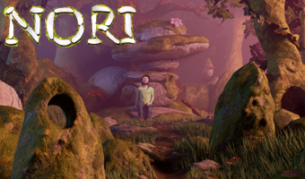
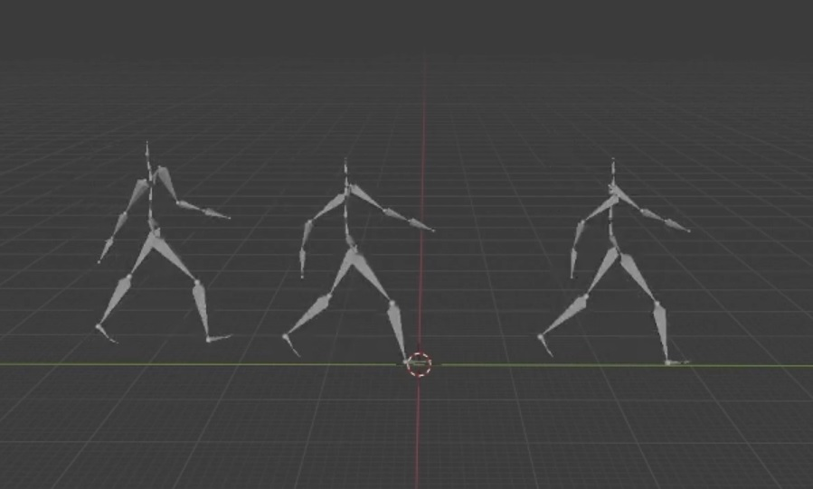
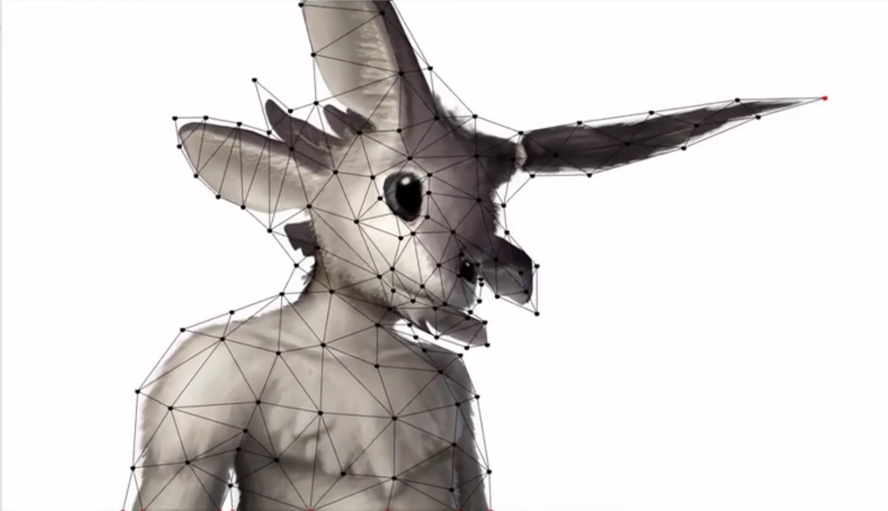
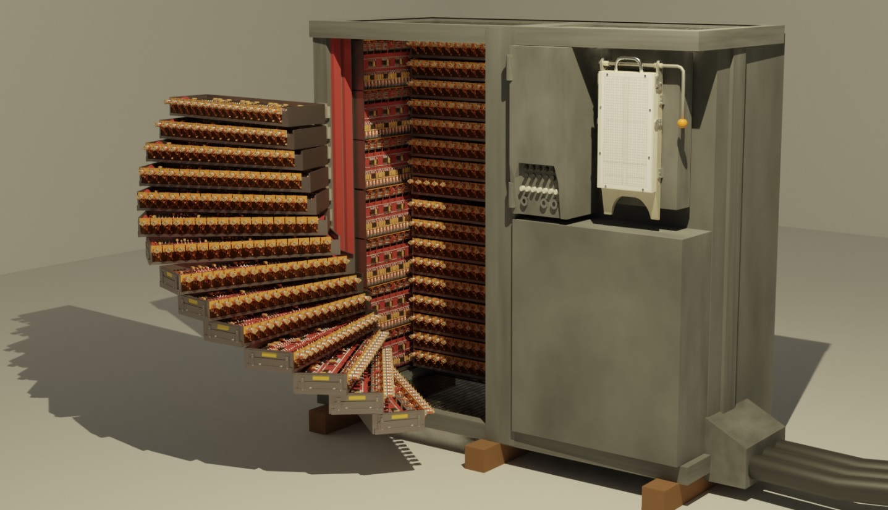

Jonathan Julou
School Projects
Non-exhaustive selection of projects made during courses

CS-440
Raytracer made in solo based on Nori for the CS-440
course at EPFL and associated competition entry
Coded in C++

Wavelet Motion Blending
Implementation of the paper "Parametric Motion
Blending through Wavelet Analysis" (LINK)
as a Blender Python plugin with Wilfried Broissart

ARAP 2D
Implementation of the paper "As-Rigid-As-Possible
Shape Manipulation" (LINK) in C++, with An Xian
Model Inference Proofs
Application of the B method to a model infering algorithm
Semester Lab Project done under the supervision of
Akram Idani and Roland Groz

Bull Gamma 3 in 3D
3D modeling of the Bull Gamma 3 computer for the
computer museum Aconit in Grenoble, and attempt
at making an interactive environment for it in Godot
SIA Course 2
Implementation of a BVH loader and animation player in
the previous render engine + Maya BVH loader C++ plugin
With Alexis Sonolet, Michael Bleuez and Clément Malleret
SIA Course 1
Implementation of a real-time render engine in GLSL
using fragment shading on GPU
With Alexis Sonolet
Projet GL
Implementation of a compiler in Java
compiles DECA, a subset of Java into assembly code
With Emma Laguier, Ulysse Rigaut, Clément Pigout, Yasser Shimou
Projet C
Implementation of a jpeg decoder in C
With Michael Bleuez and Clément Malleret